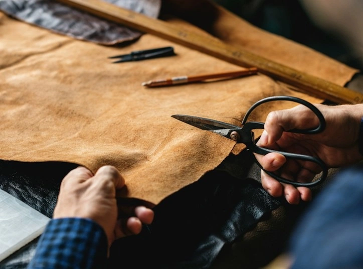

Care
How to care for calfskin
Three habits that keep a bag supple for decades, from conditioning to storage.
Start with a soft, damp cloth and a pH-balanced leather soap, working in small circles. Let the bag dry away from direct heat, then apply a thin layer of conditioner and buff with a dry cloth. Store it stuffed with tissue in its dust bag, never in plastic.
Read more